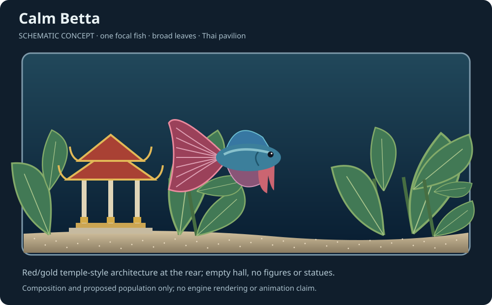
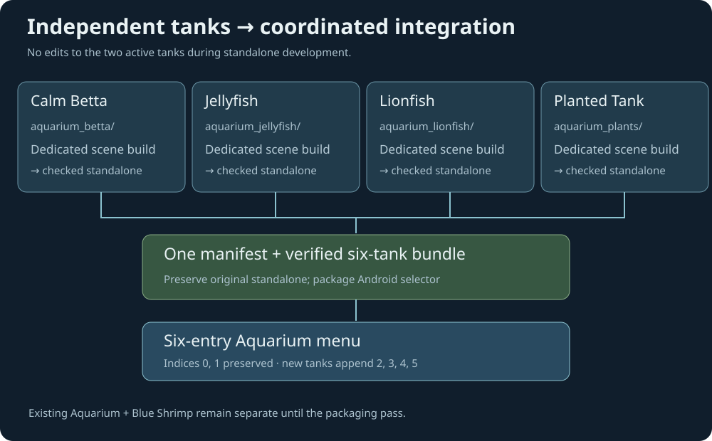

Aquarium: four more tanks
Design review · Betta, Jellyfish, Lionfish and Planted Tank. Schematic mockups, not engine captures.
Standalone development first; shared menu integration when conflicts permit.

One focal betta, broad leaves and a red/gold Thai temple-style pavilion. Empty hall, no Buddha figure or statue; open foreground for flowing fins.
Six selectable tanks

Files and integration

Full implementation plan · Visual source